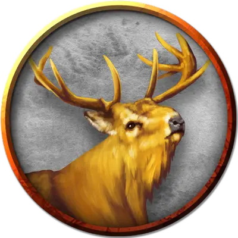

Золотой олень
Golden Stag
Большой Зверь, без мировоззрения

Класс Доспеха 10
Хиты 13 (2к10 + 2)
Скорость 50 футов
| мод | спас | ||
|---|---|---|---|
| СИЛ | 16 | +3 | +3 |
| ЛОВ | 10 | +0 | +0 |
| ТЕЛ | 12 | +1 | +1 |
| мод | спас | ||
|---|---|---|---|
| ИНТ | 2 | −4 | −4 |
| МДР | 10 | +0 | +0 |
| ХАР | 6 | −2 | −2 |
Чувства пассивное Восприятие 10
Языки Общий, Сильван, Эльфийский
Опасность 1/4 (50 опыта)
Бонус мастерства +2
Особенности
Атака в броске. Если олень переместится как минимум на 20 футов по прямой к цели, а затем в том же ходу попадет по ней атакой тараном, цель получает от атаки дополнительный урон 7 (2к6). Если цель — существо, она должна преуспеть в спасброске Силы Сл 13, иначе будет сбита с ног.
Действия
Таран. Рукопашная атака оружием: +5 к попаданию, досягаемость 5 футов, одна цель. Попадание: 6 (1к6 + 3) дробящего урона.
Копыта. Рукопашная атака оружием: +5 к попаданию, досягаемость 5 футов, одно лежащее ничком существо. Попадание: 8 (2к4 + 3) дробящего урона.
Описание
Олень обычный, но с захватывающей дух красоты золотистым мехом. Если местные фермеры узнают, что он убит, они хватают вилы и грозятся расправиться с караваном, если им не заплатят 500 золотых - олень приносил им удачу.
Олень заговорит с персонажами на сильванском языке. Если никто им не владеет, он переключится на эльфийский, а если и им никто не владеет, то на ломанный всеобщий с сильным акцентом.
Он говорит, что персонажи на верном пути, и им надо продолжать следовать по дороге золота к замку в небе. К несчастью, их путь будет наполнен трудностями и кровью. В помощь он предлагает им длинный лук +1. Лук появляется на земле перед ними, после чего олень пропадает из виду, говоря на последок: «Но выживут не все...»